https://chemapps.stolaf.edu/jmol/jmol.php?model=waterMolecules & Jmol
1 - Using Jmol to observe molecules in 3D
Objectives:
1. Access the online version of Jmol
2. Load a molecule into Jmol
Where to start?
You can start using Jmol in several ways. If you are going to use it on your computer or notebook, or even from a removable media (pendrive), you can access it by downloading, decompressing and running the
Jmol.jar file present in the main folder on the Jmol website.Now, if you don’t want to install anything, you can also access it online from several sites. In this Course we will use a very famous one, adapted from one of the program’s own developers. Just click on this link, in a new tab.
Alternatively, and throughout this Course, you can copy the code of any example by clicking on the “folder” icon to the right of each shaded area. That’s it! The code is copied to the clipboard. Now just paste it somewhere (notepad, or Jmol)**. In the case of Jmol, copy the link below and paste it in a new tab of your browser, pressing Enter afterwards.
Now, click on the molecule with the left mouse button or with the touchpad (for notebooks), and make random movements. Or, turn the middle mouse button, or perform two-finger zoom-in and zoom-out gestures on the touchpad. The Figure 1 below illustrates the result.
This is the main essence when we refer to an idea of … flying molecules for this Course.
How to load a molecule online?
To play a little with another molecule, try changing the model on the web page itself, at the end of the line. And now following the MAPA (Pedagogical support material for learning).
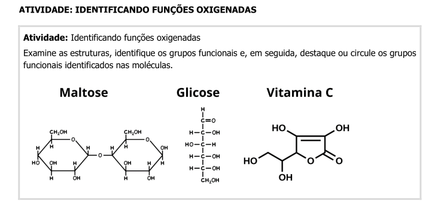
Let’s illustrate this with the structure of vitamin C (ascorbic acid).
https://chemapps.stolaf.edu/jmol/jmol.php?model=ascorbic acidYou can try this with other molecules, typing their name in English, since it is a foreign site. But of course the database for this search is not unlimited, and sometimes the system will not find the desired molecule.
But there are alternatives. One of them is to search for the name of the molecule on a site used as a database, PubChem. For example, for vitamin C (ascorbic acid):
Now it’s up to you:
- Go to the PubChem website; 2. Search for
tylenol; - If it exists, type this same term at the end of the JSmol online line, as follows, and see if it worked:
https://chemapps.stolaf.edu/jmol/jmol.php?model=tylenol
How to load a molecule online, but in 2D
Sometimes it can be interesting to have a static and two-dimensional visualization of a molecular model. To do this, simply add “image2d” to the line of code, as follows:
https://chemapps.stolaf.edu/jmol/jmol.php?model=tylenol&image2d2 - Mouse clicks versus command text
Objectives:
1. Observe that there are 2 ways to perform actions in some programs: by mouse or by text commands
2. Observe the characteristics of the use of each
3. Know some principles for “Reproducible Teaching” and the advantages of using command lines instead of mouse movements
Mouse clicks
Any computer program you have ever used, or even on mobile devices, has its usability centered on the ease of using clicks and drags with mouse, touchpad, and even your fingers (capacitive screens). This makes it much easier to perform quick actions. For example, for text editors, it is common to click on a formatting icon (italics, bold, for example) or even type its shortcut, to complete what you want in the text.
Simple, practical, and fast. In the same way, you can use Jmol, both in the version downloaded to the computer, and in the online version. For the downloaded version, just look at the range of menu items and submenus. As for the browser version, notice that there is no menu!
However, the online version allows you to view the same information, although with a different format, by simply clicking with the right mouse button on any area of the screen (a fancy name for a screen containing some information, the molecule, in this case).
Command lines
As with mouse clicks, it is also possible to access a text field to type Jmol commands, both in the downloaded version (standalone) and in the browser version (JSmol applet). For the first, click on File–>Console, and a window will appear for entering text. In the online version, right-click anywhere on the screen and choose Console*.
Mouse clicks versus command lines
Although it is possible to use Jmol both by mouse clicks and by text commands, which is better?
To help answer this question, let’s use an example of a spreadsheet, such as Excel from the MS-Office package, or Calc from the Libreoffice package, or Sheets from the Google suite. Suppose you want to make a simple graph, taking two columns, each for a variable (independent or x, and dependent, or y). The usual thing to do would be to click on a menu item for graphs, select the desired columns in specific fields in the window that opens, select the graph type, click on next or some similar term, select other characteristics (labels or names on the x and y axes, for example), and finally click on finish (or OK, or a term with a similar meaning). Simple, quick, and practical.
But (there’s always a “but”)…what if, in addition to building the graph, you needed to perform additional actions, such as obtaining the linear fit of the data, displaying the resulting line with a specific color and style, inserting the equation of the line at a specific point on the graph, adding a title, and changing the symbol of the points, both the type, size and color. Phew!!!
No problem, either…as long as you have a good tutorial at your side, of course! Or that you are already familiar with the spreadsheet program, menus and actions related to the various mouse clicks that will be necessary to obtain a beautiful linear regression graph at the end.
Now…one more small variable to add to the example given: suppose that it is not you who builds the graph, but a student in your discipline, and that they have not been trained in the use of the spreadsheet, nor in the intended calculations!
Note that now there will be some discomfort, since:
- The student has no prior knowledge in using the spreadsheet; 2. The student has no prior knowledge of the intended calculations;
- You will have to train the student, or offer him/her a related training guide;
- If the training has already taken place, but you do not have the guide at hand, both you and the student will depend on the memory retention capacity to successfully complete the task.
Now, what if the instructions for executing the final product were not in a guide for repeating mouse clicks, but in a short text containing both the commands in sequence and the explanatory comments for each individual action, and that when inserted into the program generated the graph already formatted, colored, and with the linear adjustment and the result parameters?
Advantages of using command lines over using mouse clicks
From the hypothetical example above, note that a short text containing the command lines in sequence and the comments related to them allows:
the final product to be reproducible and error-free;
the final product to be created without the student’s prior knowledge; it is enough to execute the code in the program;
the final product to be created independently of the memory of those involved (sequence of clicks, for example);
a virtually infinite number of sequential actions, without the need to memorize the order of the mouse clicks;
the learning of each command used in human language, since there are comments from the author for each line;
the product can be modified to generate a different object at the end (color change, axis labels, another title, for example);
the same graph can be reproduced, but with another set of data (x and y);
the learner can try out other commands to add different formatting and/or calculations to the product;
that you or the student can reproduce the product without resorting to memory and even for centuries afterwards, if the predictions of mass extinction do not come true;
that anyone can reproduce the object, regardless of their level of technical instruction or program operability;
finally, that it is possible to teach certain content in a reproducible way… or… Reproducible Teaching.
Thus, this course intends to use only command lines, so that the advantages described above, related to an active methodology, albeit incipient, focused on Reproducible Teaching, and both for the Jmol tool and for the R & RStudio tool.
In relation to Jmol, therefore, the sequential actions for three-dimensional visualization of molecular models will be performed by the Console accessible according to the item Section 7 above.
Scripts
Put in the above way, when you have any set of sequential command lines, allowing you to act on an object such as a molecular model, and for an infinity of things, you then have a script. Technically speaking, a script constitutes a block of sequential instructions in text for compilation into a program.
Scripts can be created in Jmol in browser in two ways:
1. Separating the commands by ";" - ex: "cpk only; color blue"
2. Separating the commands by lines - ex:
"cpk only
color blue"If you want the model to perform a few commands, the best option is to separate them with a semicolon (“;”). But if you want something more “sophisticated”, it is suggested to separate them with lines. And more… lines commented and written in a notepad or any text editor!
Advantages of using a notepad or text editor for serial commands
Imagining a more significant transformation to the original loaded molecule, such as magnification, coloring, and representation and movement effects, it is easy to see that a set of commented lines arranged in sequence makes it easier to observe what is intended with the model, as well as to identify errors and adjustments.
This is also inherited from the concepts of Reproducible Teaching, since it facilitates the visualization of the code (human readable format) and its debugging (code debug). See the example below, reflect on your interpretation, copy it to a notepad, and test it in the Jmol Console.
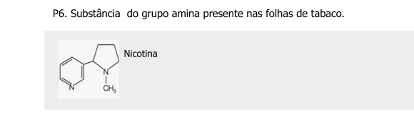
load $nicotine
background black # black background color
spin 80 # rotate the molecule
delay 3 # wait 1 second
spin off # stop the rotation
cpk # render as a fill modelNow it’s up to you:
Copy the code snippet above to a notepad.
Change the lines of code randomly, copy and run again in the Console. 1. Suggestions for changes (one or the other… or all!):
spin 300
delay 1
background magenta
3 - Some commands to explore flying molecules
Objectives:
1. Load a molecule in Jmol in an alternative way
2. Use the Console for some commands
How to load a molecule in JSmol
JSmol is nothing more than Jmol itself, but developed to be used in an internet browser, and which uses JavaScript among its languages (hence the S in JSmol).
Assuming that you have already opened the JSmol applet window in your browser but, contrary to what was done before (molecule name at the end of the PubChem website, you want to:
load a molecule from another database;
load a molecule whose file is already on your computer
Well, in this case you can use the mouse or a command line, whichever you prefer.
Loading the molecule with the mouse
To do this, simply right-click on the screen, as before, and select File–>Load. The options that appear are:
* Open local file # opens a window to search for the model file on the computer;
* Open URL # opens a window to search for the internet address that contains the file
* Get PDB file # opens a window to insert a code macromolecule from the homonymous website (proteins, nucleic acids, mainly)
* Get MOL file # opens a window to search for a *.mol file
* Open script # opens a window to search for a code snippet on the computerThe first option is self-explanatory (
Open local file), the second option (Open URL) depends on the correct address for a given molecular model, the third (Get PDB file) refers to the Protein Data Brookhaven database for biopolymers, the fourth (Get MOL file) involves searching online in a specific database for small molecules, and the last (Open script), the search for a file containing lines of Jmol code for a set of actions.As textbooks cover small molecular structures, typically associated with the functional groups of Inorganic and Organic Chemistry, as well as specific examples in areas such as Health, Biotechnology and Industry, also including some models of macromolecules, it is concluded that you will most likely use remote search for small molecules (Get MOL file), molecules on your computer (Open local file), and/or biomacromolecules (Get PDB file).
Loading small molecules is identical to what was experienced by adding the model name to the end of the JSmol address. Remote loading for protein, enzyme and nucleic acid models involves knowing the PDB code of these, or searching for keywords on the Protein Data Brookhaven website.
Loading molecules stored on the PC involves a few steps, namely:
Obtain the molecule model from the Internet, or build it;
Download the file corresponding to the model (usually with a *.mol, *.cif, *.cml, *.sdf attribute, among more than 60 formats);
Load the JSmol page using two alternative methods:
1. By clicking the mouse: File --> Load --> Open local file ;
2. By dragging the file from the folder where it is located to the JSmol tab in the browser.For example, let’s say you want to view the structure of aspirin downloaded to your computer.
Now it’s up to you:
- Access the Pubchem website: https://pubchem.ncbi.nlm.nih.gov/
- Type
aspirinin the field and click on the 3D image that appears; 1. Download the model by clicking onDownload Coordinates, and then clicking on theSDFoption; - Click on the 1st link to open the aspirin information Download the aspirin structural model from PubChem;
- Open the JSmol Console in the browser (right-click on the screen and select “Console”);
- Alternatively:
- Locate the file on your PC by “File–>Load–>Open local file”, then clicking on “Load” to load it;
- Click on the downloaded file (“aspirin.sdf”, for example) and drag it directly to the JSmol window.
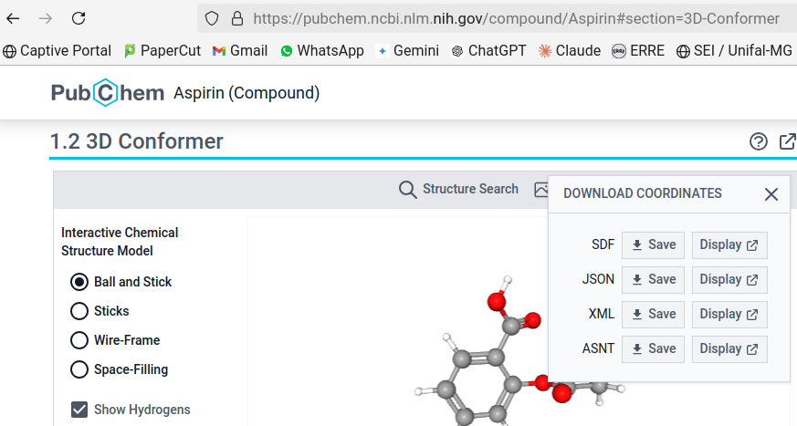
### Loading the molecule via command line
Loading a particular model via the command line is limited to searching for it on the Internet, in a database or on web pages. To do this, open the Console as explained above. The top part is used to display the results of the commands, and the bottom part is used to type them. In this case, click on the bottom frame of the Console and type the loading command, exemplified here for an alkane:
load $alkaneThe Jmol Console, although it is its own programming language for commands, has an interesting advantage over other programming languages: it is possible to execute the command via the Console with both upper and lower case letters, and in both the singular and plural.
You can try with other molecules, such as aspirin, cholesterol, phenol etc (names in English, because of the database). To retrieve a command line that was written previously, simply navigate between the commands that were used with the up and down arrows on the keyboard (command history).
Molecular models are loaded from the Cactus - CADD Group Chemoinformatics Tools and User Services database.
Loading biopolymers (proteins, enzymes, nucleic acids) via the command line
As mentioned above, loading biological macromolecules occurs by identifying an alphanumeric code for the same in front of the PDB-Protein Data Bank database. After obtaining this code, you can load the biopolymer via the online link or via the Console. But know that they are different instructions (and don’t ask me why?!):
By Console:
load=XXXX # where XXXX is the code of the macromolecule
# Note: Note that the "$" sign is replaced by "=" for the PDB
By online link:
pdbid=XXXX
# Note: Since the link is more "tricky", here is a complete example for bungarotoxin, a protein venom of snakes:
# https://chemapps.stolaf.edu/jmol/jmol.php?&pdbid=1ik8This can be illustrated by remotely loading the spike protein of the Sars-Cov-2 virus, as follows:
1. Access the PDB-Protein Data Bank website - https://www.rcsb.org/ ; 2. In the search field, type "spike sars-cov-2";
3. Select the 1st option (the site will direct you to several structures of the spike protein);
4. Memorize the code of the 1st option (although any one will do), that is, "7FCD";
5. Type the line to load the protein: "load=7FCD" (it doesn't matter if it's upper or lower case)The default representation for proteins in Jmol is wireframe. To visualize the virus protein in a more “friendly” way, and similar to what appears in texts or on the internet, type the commands below, your first sequence in programming language.
cartoon only # exclusive representation of the drawing of the structure of biopolymers
color chain # coloring by "chains" of the protein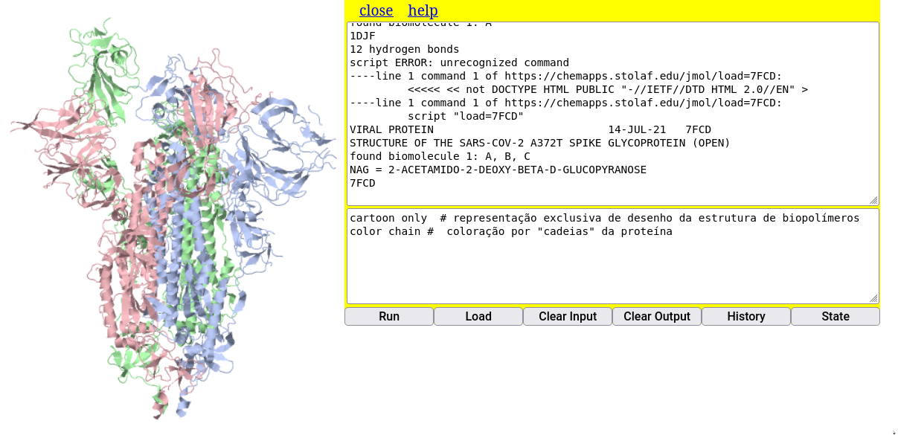
Proteins, enzymes, nucleic acids, and macromolecular associations are more relevant to the study of structural Biochemistry. In this sense, I invite you to visit a part of the authorial website that has detailed descriptions and representations of biochemical structures with the help of Jmol, the Bioquanti website
Now that the molecule is on the browser page, what can I do with it?
Sooooo many things!!!
Jmol has a menu with several operations, and hundreds of commands, and maybe another hundred tutorials on the internet. For more direct and immediate structural observations, however, the operations can be summarized as:
- Mouse movements (rotation, translation, zoom)
- Model representations (ball and sticks, filled space, wire)
- Colors (model and background)
- Measurements (distances and angles)
- Molecular characteristics (H-bonds, van der Waals cloud, partial and effective charge)
- Surfaces (molecular, electrostatic)
- Atom selection and visualization (water, hydrogen)
- Animations (zoom, automatic rotation), cuts
Saving the model to the computer or mobile device
All actions performed with the molecule produce a new model that can be downloaded to the computer. And this is really cool because the modified molecule (with changes in colors, representations, animations, for example) can be uploaded to Jmol or JSmol (internet) as already mentioned. To do this, you can use mouse clicks or command lines, as follows:
1. Right-click on the screen -> File -> Save -> Save as PNG/JMOL # by mouse
or...
2. write molecule_name.pngj # by command line in the ConsoleOne of the impressive features of Jmol is that by saving the molecule as PNG/JMOL, you can open the file as a static image with a double click, to just show the molecule, or drag the file to the Jmol window in the browser, where the three-dimensional and interactive structure of the model will be loaded!!!
Now it’s up to you:
- Load a model for “phenol” by typing in the Console:
load $phenol - Save the model by typing in the Console: `write fenol.pngj
- Change the orientation of the model randomly with the mouse (just move it around a little);
- Locate the file
phenol.pngjon your computer; - Open it as a normal figure, just to test;
- Now drag the file to the Jmol online window, and see if the model replaces the previous one (just check the orientation)
### Some movements in Jmol
To exemplify some actions, we will initially use the vitamin C model, loading it with the command below in the Console.
load $ascorbateMouse movements
For rotation and translation of the model, as well as magnification:
zoom - middle mouse button; if there is no button, Shift+left mouse button;
rotation - left mouse button
translation - Ctrl+right mouse button
rotation on the axis - Shift+right mouse buttonModel representations
Representations refer to the visual aspect of the model (rendering), or its style. Thus, Jmol can render the model as rod, wireframe, space-filled, ball and stick, trace, and cartoon (all in English, of course - cpk, wireframe, trace, cartoon).
Try these styles, including the
only option. This option allows the action not to be superimposed on the previous ones (in this case, the superimposition of the representations). To do this, copy, paste, and execute on each separate line the following code snippet in the Jmol Console, whose rendering illustrates the fluoxetine molecule.

load $fluoxetine # load the molecule
wireframe only # wireframe style
cpk only # filled space
cpk 20 only, bond 1 # balls and sticks
cartoon only # cartoon representation, but that does not occur with small molecules, only with biomacromolecules (proteins, nucleic acids, for example)Also note that the
cartoon representation does not result in a rendering for the fluoxetine model. This is because cartoon representation is restricted to biopolymers only, e.g., proteins and nucleic acids, and some supramolecular associations.However, if you want to try the
cartoon, you will need to know the alphanumeric code of a protein or nucleic acid. For example, for myoglobin, an oxygen transport protein in mammals (code: 1mcy)load=1mcy # loading myoglobin
# Note: note that the command line for biopolymers is slightly different from the one used for small moleculesNote that the default rendering for large molecules is balls and sticks, which is not very didactic for the learner. In this case, it can be represented as an exclusive drawing by typing:
cartoon only # rendering in drawingTo obtain this and other protein and nucleic acid codes, you must access the PDB - Protein Data Bank, RCSB database and type the name in the search field (in this case,
myoglobin). The system returns several structural models and their codes, and you just need to transcribe one of these codes to the JSmol Console.If you would like to learn a little more about biomolecules and the use of Jmol, I invite you to visit our Quantitative Biochemistry portal. There you will also find other applications for Jmol, R and RStudio, as well as a program that simulates transformations of elements present in schemes (diagrams, flowcharts, pedigrees, networks and webs) by differences in luminance between the element and its predecessor/successor (SISMA - Autocatalytic Map System).
Colors
There is great flexibility of colors for Jmol (and, consequently, for JSmol), both for the entire model, parts of the model (specific atoms or a set), and background. The default color display follows the CPK (Corey–Pauling–Koltun) convention. Using the previous vitamin C model (
load $ascorbate), try the following variation separately:color pink
color blue
color ligthgreen
background yellow # background colorThe last command in the list above allows you to vary the background color.
Additionally, it is also possible to color the bonds between atoms, as follows:
color bonds LightSeaGreenFor a wide range of colors, you can consult the Jmol Colors reference, or a more “chewed” link, authored by us when learning the program in higher education, the Bioquanti portal and, more specifically, the colors topic for Jmol.
Measurements
Jmol allows you to calculate distances and angles in a molecular model. To exemplify this, it might be interesting to load a water model (
load $water), and whose distances and angles are present in some Chemistry books.For distances
In the example of the water molecule, to determine the distance of an O-H bond, for example, execute:
1. Double-click the mouse on the 1st atom;
2. Drag the mouse to the 2nd atom;
3. Click the mouse on the 2nd atomExperimenting with the distance of the O-H bond, the program returns the value of 0.097 nm, or 0.97 Angstroms, the conventional value for this type of covalent bond.

For angles
For the same water molecule, try to determine the bond angle:
1. Double-click the 1st atom (e.g. H);
2. Drag to the 2nd atom (e.g. O); 3. Click on the 2nd atom;
4. Drag to the 3rd atom (e.g. the other H);
5. Click on the 3rd atomNotice that the system returns the value of 114\(^{o}\), a value close to that predicted for the molecule (109.5\(^{o}\)), or measured (104.5\(^{o}\)). This approximation is a result of the construction of the water model.

To clear the measurements, use the command:
measure offMolecular characteristics
There are several tangible pieces of information for a molecular model in Jmol. For example, the most basic ones for the molecule of a component of shoyo sauce, glutamate:
Charges
Sometimes it may be interesting to present the polarity of molecules as a function of their charge distribution. In Jmol there are two types of charges, effective charge (
formaCharge) and partial charge (partialcharge). We can illustrate the charge distribution in a surfactant molecule, such as hexadecanoate.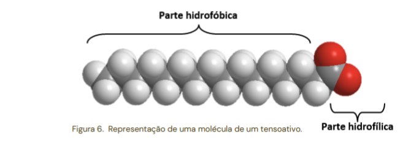
.To do this, type the following commands in the Console:
load $hexadecanoate
calculate partialCharge # calculation of partial charges of the model
label %P # presentation of charges (labeling)A feature of Jmol that makes it more efficient in executing its actions is the sequential arrangement of commands. This way, it is not necessary to press Enter for each command, simply separate the commands with a semicolon (;) as illustrated below, to calculate the partial charges of the glutamate molecule:
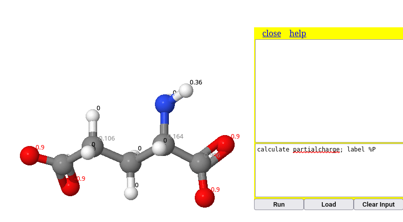
In the same way, it is possible to illustrate the obtaining of formal charges in the model. In this case, transparent coloring was added to better visualize the negative unitary charge of the carboxylic acid:
calculate formalcharges # calculation of partial charges of the model
label %C # presentation of charges (labeling)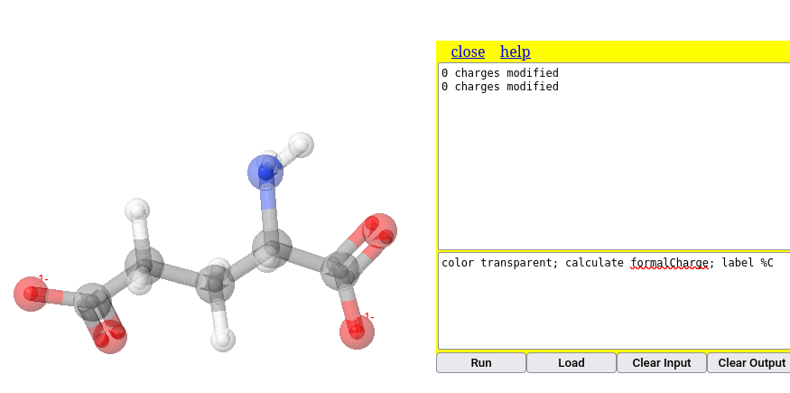
Note that the commands in the figure mix upper and lower case letters, unlike the command line that precedes it. This is a really cool feature of Jmol, which doesn’t care about the capitalization or not of the font. In other words, it doesn’t matter if it’s lower case, upper case or a combination of both; Jmol executes the action in the same way.
Scripts & Reproducible Teaching
The example above shows a simple way to concatenate commands, facilitating the automatic and sequential execution of a set of these. However, the visualization of the command line is somewhat impaired by the separation by “;”, which can cause visual pollution when there are several commands.
The workaround involves the arrangement of the commands in the format of a script. This is nothing more than a code snippet containing one command per line, which improves the visualization of the code as a whole. In addition, the script has the additional advantage of inserting comments between the command lines, also allowing for better appropriation of the code and its learning.
These characteristics of a command per line with explanatory comments give Jmol its aspect for programming sequential actions, and consequently establishes one of the basic premises for Reproducible Teaching: writing code snippets in unitary commands per line, written as in a notepad, and with comments about the program’s actions on each line.
As an example for a script involving the actions for glutamate above, just copy the snippet below and paste it into the JSmol Console, and run it.
load $glu # micromolecule loading
wireframe only # exclusive rendering of rods
calculate partialCharge # partial charge
label %PAnother aspect inherent to the Reproducible Teaching initiative lies in the possibility of evaluating the code with some changes, aiming for a slightly modified final product. Try repeating the snippet above, but for effective charges, that is:
load $glu # micromolecule loading
cpk only # exclusive rendering by filled space
calculate formalCharge # effective charge
label %CAdditionally, it is possible to act by changing more code commands, in order to create a result completely different from the original. This defines another characteristic of Reproducible Teaching, namely, the creation of a code snippet. As an illustration, here is a snippet based on the previous one, but for energy minimization and restructuring of the molecule’s orbitals.
load $glu # micromolecule loading
cpk only # exclusive rendering by filled space
minimize # command for minimizing the structure's energyMolecular characteristics
Sometimes it is also interesting to introduce the class to the concept of weak forces that permeate molecular interactions, as illustrated below.
{kind=link}
In addition to structural prediction for partial charge and formal charge, Jmol also allows highlighting weak forces in the model, such as van der Waals cloud and hydrogen bonds, as follows.
Van der Waals cloud
dots on # van der Waals cloud on the atoms of the model (removed with "dots off")
calculate hbonds # identifies hydrogen bonds in the modelTo illustrate, copy and paste the following excerpt into the Console:
load $water
dots on # van der Waals cloud in the water structure
dots ionic # ionic cloud on the model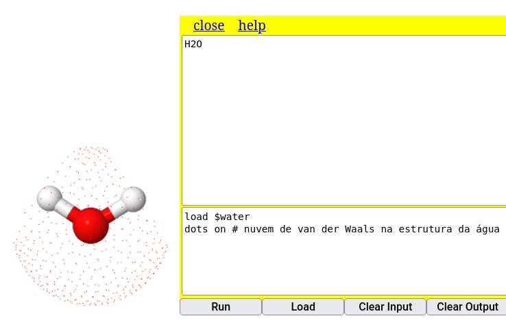
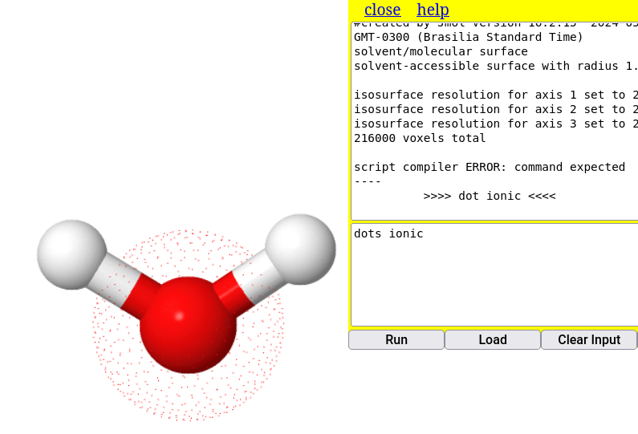
### Hydrogen bonds
load=1djf # load a peptide model
calculate hbonds # show the H bonds present in the structure
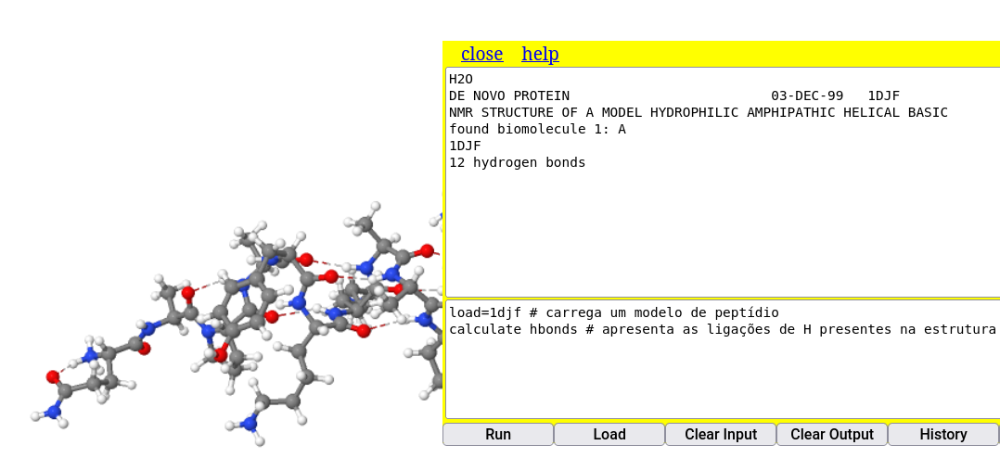
Surfaces
In addition to the van der Walls surface (dots on) seen above, Jmol is capable of representing some surfaces for molecular models. The larger the molecule, the greater the internal calculation to generate the surface, which can make it difficult to visualize. Thus, illustrating a simple command for the surface of a water molecule:
isosurface molecular # molecular surface that includes the solvent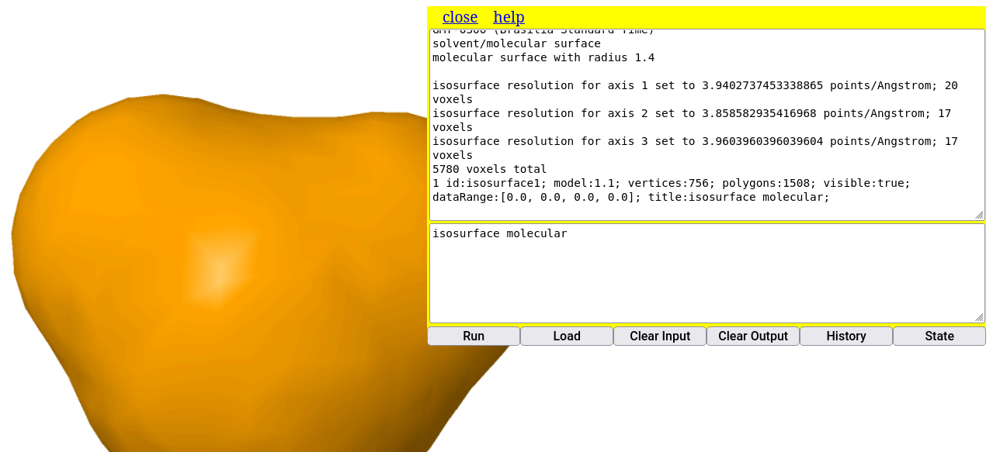
4 - Some animations with Jmol
Objectives:
1. Understand a molecule animation as a script
2. Use the Console to animate molecules
Animate the molecules.
And we come to this last part of the Course with Jmol, to present a very interesting didactic-pedagogical effect of the program: molecule animation.
You may want to show a molecule with different styles during a certain period, or make a slow transition between colors in specific atoms, or even controlled enlargement, reduction, or rotation effects. And many others that imagination and technical rigor allow for study.
In these cases, it is interesting to know and apply a few animation commands explained below. The examples were selected in order to simplify each command. But do not be fooled about the capacity of Jmol, because for each command there are always several complementary options. And if you want to know something about any Jmol command, visit the reference site.
Spin
Simple command for rotating the molecule.
load $glucose; spin 30 # the value refers to the rotation speedZoomTo (resizing the size)
This command is impressive, because it allows a controlled enlargement or reduction in time. Its syntax is:
*zoomTo* : time (optional expression) sizeExamples:
Zoom in 3x, half a second at a time: zoomto 0.5 *3
Zoom in 4x, half a second at a time: zoomto 0.5 400
Focus on a biopolymer ligand at 2x magnification: zoomto 2(ligand) 0
Focus on a biopolymer ligand at 4x magnification, half a second at a time: zoomto 0.5(ligand)* 4Delay
This is a key command for any animation, as it allows the image of the molecule in Jmol to pause (in seconds) before the next action. It is normally used in the sequence of commands by the Console, throughout a script.
delay 3 # wait 3 seconds before the next actionWe can try an animation with the commands above together with the cyclohexanol model.
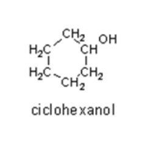
Here is a code snippet for you to try animations with Jmol. Just copy and paste it into the Console and run it. If you prefer any modifications, it is better to copy it to a notepad, modify and test the script in the Console.
Now it’s your turn:
load $cyclohexanol
delay 2
spin Y 70
delay 2
spin off
zoomTo 2 *2
cpk
delay 2
color transparent
zoomTo 2 *0.5
spin 50